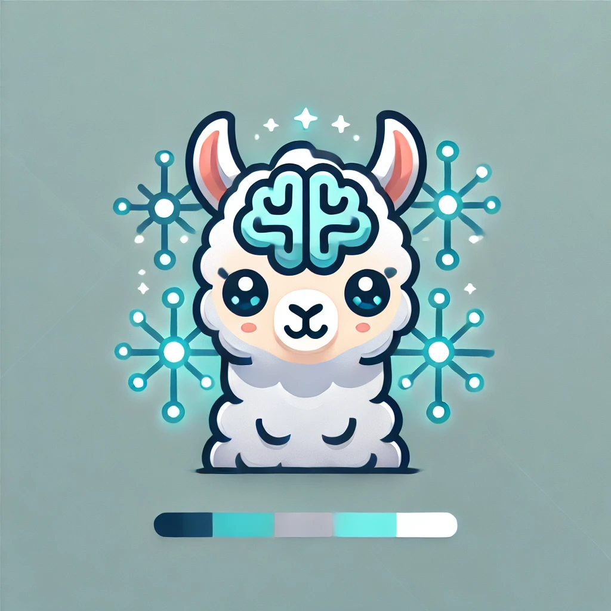

NeuroLAMA

Welcome to NeuroLAMA!
The Neuroscience Longitudinal and Multimodal Analysis System, built to:
- Advance machine learning for Alzheimer’s and cognitive decline research
- Remain open and extensible for community contributions
- Ensure compatibility with major neuroscience datasets, like ADNI
Papers and Code
-
The NeuroLAMA GitHub
-
A repository of machine-learning code for the analysis of longitudinal Neuroscience study data
-
Ashish, R.M. and Turner, J.A. 2024. Towards Multimodal Longitudinal Analysis for Predicting Cognitive Decline
bioRxiv preprint
Chief Llama
Rayan Ashish